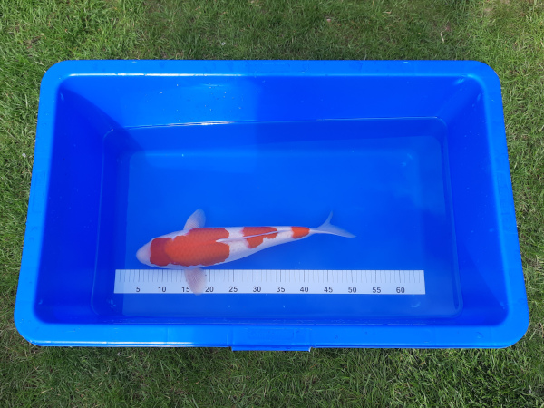

Koi
| Naam : Malay (zebra @ Thai) Variëteit : Shiro Utsuri Kweker : Omosako Geslacht : ♀ Leeftijd (2021-08-06) : Tosai Lengte (2021-08-06) : 30 cm Lengte (2023-07-02) : 44 cm Lengte (2025-04-24) : 53 cm |

(6 augustus 2021)
| Naam : Kyu (bol @ Japans) Variëteit : Tancho Kohaku Kweker : Takashi Hirasawa Geslacht : ♀ Leeftijd (2021-08-06) : Nisai Lengte (2021-08-06) : 50 cm Lengte (2023-09-24) : 61 cm |

(6 augustus 2021)
| Naam : Fulmo (bliksem @ Esperanto) Variëteit : Kohaku Kweker : Hidemassa Geslacht : ♀ Leeftijd (2021-08-06) : Nisai Lengte (2021-08-06) : 50 cm Lengte (2023-07-02) : 57 cm |

(14 augustus 2021)
| Naam : Crassus 'Dikkie' (dik @ Latijn) Variëteit : Chagoi Kweker : Otsuka Geslacht : ♀ Leeftijd (2022-03-12) : Nisai Lengte (2022-03-12) : 49 cm Lengte (2023-07-02) : 61 cm Lengte (2024-09-11) : 69 cm |

(23 april 2022)
| Naam : Tacat (gevlekt @ Catalaans) Variëteit : Sanke Kweker : Sakai Fish Farm Geslacht : ♀ Leeftijd (2022-06-26) : Sansai Lengte (2022-06-26) : 60 cm Lengte (2023-07-02) : 61 cm |
(29 juli 2022)
| Naam : Taika (tijger @ Maori) Variëteit : Hi Utsuri Kweker : Shinoda Geslacht : ♀ Leeftijd (2022-08-19) : Nisai Lengte (2022-08-19) : 45 cm Lengte (2023-09-24) : 56 cm |

(19 augustus 2022)
| Naam : Ibala (gevlekt @ Zoeloe) Variëteit : Showa Kweker : Isa Geslacht : ♀ Leeftijd (2022-08-19) : Nisai Lengte (2022-08-19) : 41 cm Lengte (2023-09-24) : 54 cm |
(19 augustus 2022)
| Naam : Pinha (dennenappel @ Portugees) Variëteit : Aka Matsuba Kweker : Maruhiro Geslacht : ♀ Leeftijd (2024-05-05) : Nisai Lengte (2024-05-05) : 55 cm |
(5 mei 2024)
| Naam : Munru (drie @ Tamil) Variëteit : Sandan Kohaku Kweker : Marujyu Geslacht : ♀ Leeftijd (2024-10-23) : Nisai Lengte (2025-04-19) : 45 cm Lengte (2025-06-17) : 47 cm |

(19 april 2025)